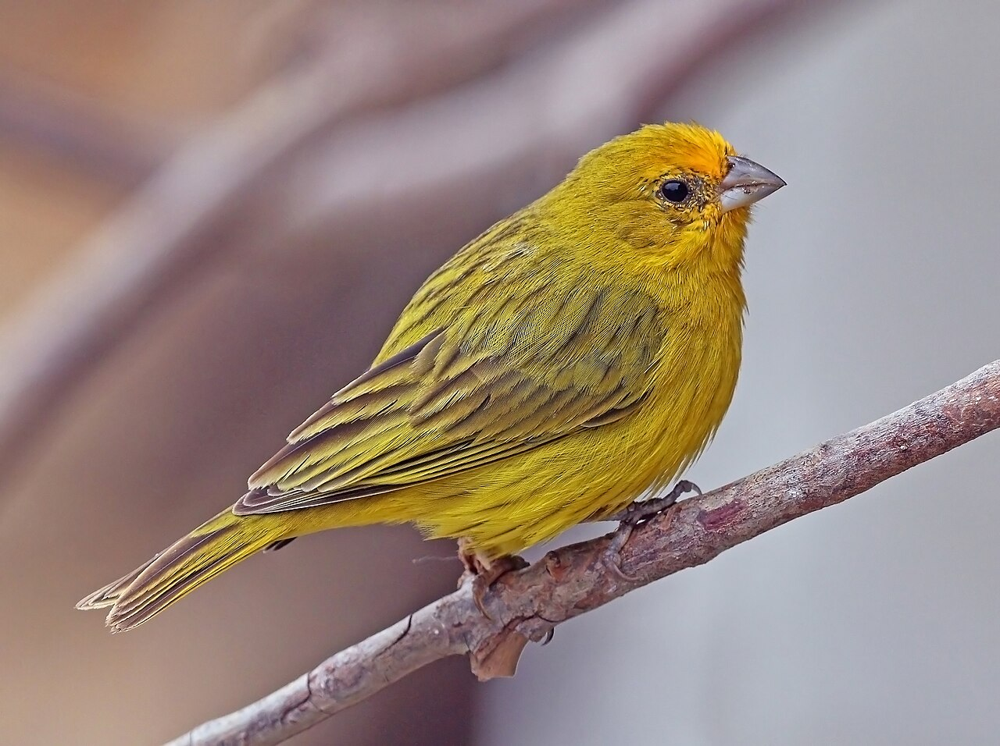

Lula.
diario de la mañana — el mundo, tu ciudad y lo que te asombra
Buen día. Día lindo, de 15° a 21°, con viento del noreste y sin lluvia. Hoy: Ormuz otra vez en el centro de todo, Brasil entrando en la última semana antes del balotaje, y una ciencia que llega justo mientras sesiona la cumbre de biodiversidad en Ereván: un trabajo que dice que el planeta protege más tierra de la que figura en los registros oficiales, y que eso no es necesariamente una buena noticia. Y el cine de hoy es París, Texas, con el pulóver de mohair más famoso de la historia del cine.
- El mundo en cinco minutos3'
- Argentina y Buenos Aires2'
- Ciencia: el mapa de lo protegido7'
- Mirá a tu alrededor2'
- Receta de estación2'
- La palabra del día1'
- Le français du matin2'
- English corner3'
- Jueves de cine: París, Texas5'
- Hoy en la historia · un lugar2'
- Lo que me asombra hoy1'
- Pasatiempo: sudoku medio12'
- Cuaderno: repaso, quiz y escritura4'
Irán dice que atacó cuatro buques en el Golfo
Según la agencia EFE, Irán afirmó haber atacado cuatro buques en el Golfo Pérsico, y otros tres chocaron con minas en el estrecho de Ormuz. Es la semana más tensa desde que empezó la crisis: el tránsito de petroleros por el estrecho está muy por debajo de lo normal y el precio del combustible se mueve con cada titular.
Por qué importa: por Ormuz pasa cerca de una quinta parte del petróleo que se comercia en el mundo, y no hay ruta alternativa real. Cada barco averiado sube la prima de los seguros marítimos, que después se paga en el surtidor y en el flete de todo lo demás.
Brasil, última semana antes del balotaje
El domingo se define la presidencia entre Lula y Flávio Bolsonaro. Hoy se publica una nueva encuesta de Datafolha, la consultora de referencia. Es la elección más importante del año para la Argentina: Brasil es nuestro principal socio comercial.
Y además
Rusia volvió a atacar Kiev con misiles balísticos, con al menos 15 heridos. Serbia vota el domingo elecciones parlamentarias anticipadas, después de dos años de protestas estudiantiles. En Francia, París restringe hoy las manifestaciones en algunas zonas, con la huelga general convocada para el 5 de noviembre. Las universidades austríacas se movilizan contra los recortes. Y en Venezuela hay una marcha opositora para reclamar fecha de elecciones presidenciales.
Milei vuelve de Madrid
El Presidente regresa hoy de España, donde disertó en el foro Nueva Economía, en el Casino de Madrid, y se reunió con Isabel Díaz Ayuso. No hubo reuniones oficiales con el rey ni con Pedro Sánchez: el viaje fue a la interna de la derecha española, a cinco semanas de las elecciones del 29 de noviembre en las que Sánchez se juega el gobierno.
Lo que queda acá: el riesgo país sigue en torno a los niveles más altos del año y el mercado mira los vencimientos de 2027. Un viaje sin acuerdos firmados no mueve esa aguja; su efecto, si lo tiene, es político.
Para hacer en la ciudad
- Sala Lugones (Av. Corrientes 1530, Teatro San Martín): «En las rutas de Wim Wenders», diez películas en copias 4K, hasta el 30 de octubre. Es la sección de hoy. Desde mañana arranca la segunda parte de la retrospectiva de Frank Borzage.
- Para agendar: arteBA, del 30 de octubre al 1 de noviembre en La Rural. Y el 29, Imamura en la Lugones por el centenario de su nacimiento.
Chequeá horarios en complejoteatral.gob.ar antes de ir.
Hay más tierra protegida de la que figura, y está mal repartida
De qué estamos hablando: el mundo se comprometió en 2022, en el marco de Kunming-Montreal, a proteger el 30 % de la tierra y del mar para 2030 —la famosa meta 30×30, que se está revisando esta semana en la COP17 de Ereván—. El problema es cómo se cuenta. El registro oficial suma las áreas formalmente declaradas, y da alrededor de un 18,5 % de la superficie terrestre. Un trabajo publicado en Nature rehízo la cuenta incluyendo tierras que conservan biodiversidad sin estar declaradas como parque, y el número cambia bastante.
Quién es quién
- WDPA: la base de datos mundial de áreas protegidas, donde cada país declara sus parques y reservas. Es lo que se usa para medir el avance de la meta.
- OECM: «otras medidas efectivas de conservación basadas en áreas». Tierras que conservan biodiversidad de hecho aunque no hayan sido creadas para eso ni figuren como parque: territorios indígenas, campos militares, sitios sagrados, reservas privadas. Cuentan para la meta si se demuestra que funcionan.
- Representatividad ecológica: que lo protegido cubra todos los tipos de ecosistema, y no solo los que a nadie le servían para producir. Es un criterio explícito de la meta, no un detalle.
Qué encontraron
- El número: 19,43 % de la tierra en áreas protegidas formales, más un 7,38 % adicional que cumpliría los criterios para ser reconocido como OECM. Total: 26,81 %, contra el 18,5 % que figura en los reportes.
- Qué significa: la meta 30×30 terrestre está mucho más cerca de lo que se creía, y gran parte de lo que falta no es crear parques nuevos sino reconocer lo que ya se conserva, casi siempre por comunidades locales e indígenas que no reciben nada a cambio.
- El pero, que es el corazón del paper: la representatividad sigue siendo mala. Lo protegido está sesgado hacia lo que no se podía explotar —alta montaña, hielo, desierto— y faltan justo los ecosistemas más transformados, que son los más amenazados. Acá: pastizal pampeano, espinal, bosque chaqueño.
Lectura crítica
- «Cumpliría los criterios» no es lo mismo que «es». El 7,38 % sale de un análisis de elegibilidad, no de un reconocimiento formal, que exige consulta y consentimiento de quienes viven ahí. Contarlo de oficio sería, además de impreciso, una apropiación.
- Cuidado con el uso político del titular: «ya estamos en 26,8 %» puede servir de excusa para no crear áreas nuevas, justo cuando el paper dice que faltan los ecosistemas que más importan.
- Trabajé con el resumen y la difusión, no con las figuras ni los mapas. Cuando los veas, mirá la definición operativa de OECM que usaron: ahí se juega todo el resultado.
«Global conservation area coverage substantially exceeds current estimates». Nature (2026), doi:10.1038/s41586-026-11157-4 · contexto: nota de Nature
Biotec en el mundo real · El Banco de Germoplasma del INTA
Si el tema del día es conservar, la versión de laboratorio es el banco de germoplasma: conservar ex situ lo que no se puede garantizar in situ. El INTA coordina una red nacional de bancos (el principal, en Castelar) con decenas de miles de entradas de especies cultivadas y de sus parientes silvestres, que son el reservorio real de variabilidad para mejoramiento.
- Cómo se conserva una semilla: se la seca a baja humedad relativa y se la guarda a −18 °C. Bajar agua y temperatura frena las reacciones de deterioro —oxidación de lípidos de membrana, reacciones de Maillard entre azúcares y proteínas, daño del ADN—, y así la viabilidad se mide en décadas en vez de años. Cada tanto hay que hacer pruebas de germinación y regenerar la entrada.
- Lo que no entra en un frasco: las especies de semilla recalcitrante (muchas tropicales), que no toleran el secado. Para esas hay que ir a cultivo in vitro o a crioconservación en nitrógeno líquido, con vitrificación para evitar cristales de hielo.
- Por qué importa el marco legal: el acceso a esos recursos y el reparto de beneficios se negocian en el Protocolo de Nagoya y en el Tratado de la FAO. Es lo que define si una empresa puede usar un pariente silvestre argentino de papa para mejorar una variedad y qué le corresponde al país de origen.
- Salida laboral: curaduría de bancos, fisiología de semillas, cultivo in vitro, caracterización molecular de accesiones.
Ciencia en la vida cotidiana · Por qué una mordida de mora mancha para siempre
El color de la mora son antocianinas, los mismos pigmentos del arándano y del repollo colorado. Son moléculas solubles en agua, guardadas en la vacuola de la célula, y cambian de color con el pH: rojizas en medio ácido, violetas cerca del neutro, azuladas o verdosas en alcalino. Por eso la mancha en la remera se ve distinta antes y después de echarle jabón.
Qué hacer: agua fría y apurarse. El calor acelera la oxidación de la antocianina, que polimeriza y se pega con más fuerza a la fibra; por eso el agua caliente «fija» la mancha. Si ya está, probá con agua y limón (medio ácido, donde el pigmento es más soluble) antes que con jabón alcalino. Y nada de secarla al sol: la luz termina de polimerizar lo que quedó.
La morera, que mancha la vereda, y el jilguero

_male.JPG){kind=link}
El árbol: morera
| Nombre científico | Morus alba (Moráceas, como el gomero de ayer y la higuera). Vino de China, y no por su fruta: es el único alimento del gusano de seda, y se plantó en medio mundo para eso. |
|---|---|
| Por qué ahora | Está dando fruto. Entre octubre y noviembre las veredas quedan manchadas de violeta y los árboles llenos de pájaros: zorzales, naranjeros, jilgueros, todos ahí. |
| El detalle | La «mora» no es una fruta sino una infrutescencia: el conjunto de muchas flores diminutas, cada una convertida en su propio frutito carnoso y todas pegadas. Lo mismo que el ananá. Y la especie dispara el polen con un mecanismo elástico que es de los movimientos más rápidos del reino vegetal. |
El ave: jilguero dorado
| Nombre científico | Sicalis flaveola (Tráupidos) |
|---|---|
| Cómo reconocerlo | El macho adulto es amarillo intenso con la frente anaranjada; la hembra, parda rayada. Mide unos 13 cm y canta mucho, desde un cable o una antena. |
| Por qué ahora | Es temporada de cría y no hace nido propio: ocupa huecos de árbol, nidos viejos de hornero o cualquier agujero de un edificio. Si ves uno entrando a un caño, es eso. |
Mermelada express de moras
Veinte minutos y un frasquito. Sirve igual con frutillas o arándanos.
Ingredientes
- 400 g de moras (lavadas; si las juntás de la calle, de una vereda tranquila y lejos de la avenida)
- 200 g de azúcar
- El jugo de medio limón
Pasos
- Mezclá todo en una olla ancha y dejá reposar 15 minutos, hasta que la fruta suelte jugo.
- Fuego medio, revolviendo, 12 a 15 minutos.
- Probá el punto: una gota en un plato frío tiene que arrugarse al empujarla con el dedo.
La química de la receta
Una mermelada es un gel de pectina, el polisacárido de la pared celular de la fruta. Para que gelifique hacen falta tres cosas al mismo tiempo: pectina (la aporta la fruta, y las moras tienen poca, por eso conviene cocinarlas un poco más), azúcar en alta concentración (compite por el agua y deja que las cadenas de pectina se encuentren entre sí) y acidez (pH cercano a 3: el limón protona los grupos carboxilo de la pectina, baja la repulsión entre cadenas y les permite unirse). Si te queda líquida, casi siempre falta ácido, no azúcar.
El color se apaga al cocinar porque las antocianinas se degradan con calor y oxígeno; por eso la cocción corta, la olla ancha (evapora rápido) y el frasco lleno hasta arriba conservan mejor el violeta.
paisaje sustantivo
latín pagus (aldea, campo) → país → francés paysage (siglo XVI) → castellano paisaje · inglés landscape (del neerlandés landschap)
La palabra es sorprendentemente nueva: paysage aparece en el francés del siglo XVI y no nombra la naturaleza sino un género de pintura, el cuadro que muestra campo. Primero fue el cuadro; después, por contagio, llamamos «paisaje» a lo que el cuadro mostraba. El inglés hizo lo mismo con landschap, que los pintores holandeses pusieron de moda. De pagus vienen también país, paisano, payés y pagano (el del campo, el que seguía con los dioses viejos cuando la ciudad ya era cristiana).
Y queda rondando una pregunta que es la del paper de hoy y la de la película de hoy: si el paisaje es una manera de mirar, ¿qué pasa con el campo cuando nadie lo mira? Lo que no entra en el mapa, no se protege; lo que no entra en el plano, no está en la película.
C'était très bon
— Encore un peu de pain ?
— Non merci, je n'ai plus faim.
— C'était très bon !
— Avec plaisir. Bonne soirée !
| le pain | el pan [lə PAN] |
|---|---|
| encore un peu ? | ¿un poco más? [an-KOR an PÖ] |
| je n'ai plus faim | ya no tengo hambre [yə ne plü FAN] |
| c'était très bon | estuvo muy rico [se-TÉ tre BON] |
Un truco
Acá aparece la negación: va en dos partes, una antes del verbo y otra después. Je ne mange pas (no como), je n'ai plus faim (ya no tengo hambre), je ne sais rien (no sé nada). El ne se come en el habla rápida («j'ai pas faim»), pero escrito va siempre.
Brazil's choice, and the region's
On Sunday Brazilians return to the polls to choose between Luiz Inácio Lula da Silva and Flávio Bolsonaro, in a run-off that has been less a contest of programmes than a referendum on which version of the country the electorate can still stomach. Whoever wins inherits an economy that has held up better than expected and a congress unlikely to make governing easy.
For Brazil's neighbours, the stakes are of a different order. Argentina sends a fifth of its exports across that border, and the rules governing them — tariffs within Mercosur, the stalled agreement with the European Union, the treatment of the car industry — are set in Brasília as much as in Buenos Aires. A change of direction there reshapes the terms of trade here, regardless of who is in the Casa Rosada.
Pollsters have had a rough few years in Brazil, and the final Datafolha survey, out today, will be read with that in mind. The margin, on most readings, is narrow enough that turnout in the northeast could settle it.
- to return to the polls — volver a las urnas
- to stomach — tragar, soportar
- to hold up — aguantar, resistir mejor de lo esperado
- the stakes — lo que está en juego
- of a different order — de otra magnitud
- stalled — estancado, frenado
- a rough few years — unos años difíciles
- to settle it — definirlo, decidirlo
París, Texas (1984): un hombre que camina hasta quedarse sin desierto
Empieza con un hombre caminando por el desierto de Texas, con gorra roja y traje arruinado, sin hablar. Es Travis (Harry Dean Stanton), que desapareció cuatro años y reaparece sin explicar nada. La película es su camino de vuelta hacia un hijo que ya no lo reconoce y hacia Jane (Nastassja Kinski), la mujer que dejó. La dirigió Wim Wenders, el guion es de Sam Shepard, la fotografía de Robby Müller y la música —esa guitarra slide que es media película— de Ry Cooder. Ganó la Palma de Oro en Cannes en 1984.
Qué mirar
- El color. Müller pinta con luz de neón: rojos, verdes y azules saturados contra el beige del desierto. Nada es casual; la paleta es tan protagonista como los actores.
- La escena del peep-show. Los últimos veinte minutos son una conversación entre dos personas separadas por un vidrio espejado: él la ve, ella solo ve su propio reflejo. Es una de las escenas más famosas del cine de los ochenta, y está filmada casi entera en dos planos fijos.
- El silencio del principio. Travis no habla durante los primeros veinticinco minutos. Fijate cómo la película te hace entender todo igual, con objetos y con caras.
Moda en pantalla · el pulóver de Jane
El vestuario de esta película se volvió una estética entera: la gorra roja de Travis con su traje viejo, y sobre todo el pulóver-vestido de mohair que lleva Jane en la escena del vidrio. Es tan citado que cada dos temporadas vuelve a aparecer en pasarelas y en editoriales de moda.
Dos honestidades. Una: nadie se pone de acuerdo con el color. Las fuentes lo describen como rosa, rojo o frambuesa, y buena parte de eso es culpa de la propia película: bajo la luz de neón del peep-show, el mohair cambia de tono plano a plano. El pelo largo de la fibra dispersa la luz y hace halo, así que el color depende tanto de la lámpara como de la lana. Dos: el crédito de vestuario que circula (Birgitta Bjerke) aparece en una sola fuente de fans y no pude confirmarlo en ninguna ficha oficial, así que te lo doy con pinzas.
Dónde verla: el ciclo «En las rutas de Wim Wenders» está en la Sala Lugones hasta el 30 de octubre, con copias en 4K.
22 de octubre de 1797: el primer salto en paracaídas
Sobre el Parc Monceau de París, André-Jacques Garnerin subió en globo a unos 900 metros, cortó la cuerda y bajó colgado de una lona de seda de siete metros de diámetro. Fue el primer descenso en paracaídas desde una gran altura hecho por una persona. El viaje fue un desastre controlado: sin orificio en el centro, el aire atrapado se escapaba por los costados de forma alternada y la canasta osciló tan violentamente que Garnerin llegó al piso mareado y vomitando. El astrónomo Lalande le sugirió después la solución: un agujero en el vértice, para que el aire salga por arriba de forma pareja. Todos los paracaídas redondos lo siguen teniendo.
Su mujer, Jeanne-Geneviève, se convirtió poco después en la primera paracaidista mujer, y vivió de eso: los saltos eran espectáculo pago.
El lugar: Parc Monceau
| Qué es | Un parque de 1778 diseñado como «jardín de ilusiones», con ruinas falsas: una pirámide egipcia, una columnata, un puente veneciano. Era la moda del jardín pintoresco. |
|---|---|
| Quién lo pintó | Monet, en una serie de 1876-1878. Si entrás a la sección de la palabra de hoy, es literalmente eso: primero el cuadro, después el paisaje. |
El organismo más grande del mundo es un hongo de nueve kilómetros cuadrados
En el bosque de Malheur, en Oregón, hay un individuo de Armillaria ostoyae —un hongo que parasita raíces de coníferas— que se extiende por unos 9 km² bajo tierra. No se ve casi nada: lo que hay son rizomorfos, cordones negros de hifas apretadas, como cables, que corren entre las raíces y van infectando árbol por árbol. Se identificó como un solo individuo porque todas las muestras tomadas a kilómetros de distancia resultaron genéticamente idénticas y compatibles entre sí.
Las estimaciones de edad rondan los 2.400 años, con un margen enorme porque se calcula a partir de la velocidad de crecimiento. Lo que me gusta del dato no es el tamaño sino lo que implica: la pregunta «¿qué es un individuo?» no tiene una respuesta universal en biología, y depende de si la contesta un ecólogo, un genetista o alguien que mira el bosque desde arriba.
El del jueves
Repaso y quiz de la mañana
Repaso de idiomas
Quiz
¿Qué es una OECM?
Según el trabajo de hoy, la cobertura terrestre total sería de…
¿Cuál es el «pero» del paper?
En un banco de germoplasma, ¿por qué se seca la semilla antes de congelarla?
Para que gelifique una mermelada hacen falta pectina, azúcar y…
La «mora» es, botánicamente…
¿Qué le faltaba al paracaídas de Garnerin?
Escritura
- Quiz: un área que conserva de hecho · 26,81 % · sesgo hacia lo inexplotable · menos agua frena el deterioro · acidez · una infrutescencia · un agujero en el vértice.
- Repaso: je voudrais le poulet · c'est combien ? · j'ai faim · pasarse (un efecto) · una vara de medir · presentarse como.
- Francés: «Je n'ai plus faim. C'était très bon !»
- English: Because Brazil's trade rules — Mercosur tariffs, the EU deal, the car industry — are decided in Brasília and directly shape Argentina's terms of trade, whoever governs here.
Sudoku:
Fuentes de esta edición
- Mundo: EFE vía Infobae, 22 de octubre · EFE: hoy será noticia
- Argentina: Moncloa: Milei y Ayuso · MDZ: el viaje
- Clima: La Nación (SMN)
- Ciencia: Nature: cobertura global de áreas de conservación · nota de Nature · INTA
- Cine: Sala Lugones: programación · Infobae: el ciclo Wenders · AnOther: el vestuario
Mañana, viernes: música clásica. — Lula.